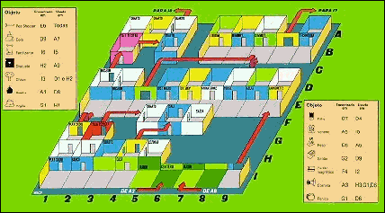
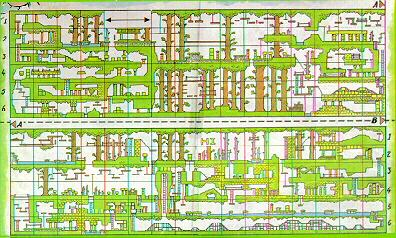

Quando você era criança:Se pelo menos um dos fatos acima acontecia com você, meus parabéns, você adorará os jogos que comentarei hoje! O primeiro será o JACK THE NIPPER 1; o outro será JACK THE NIPPER 2, IN THE COCONUT CAPERS. Esses jogos podem ser entendidos como um quebra-cabeças onde você deverá encontrar a solução para um problema. O problema no caso é: Como realizar o maior número possível de traquinagens, utilizando os objetos disponíveis no jogo? (...)
- Gostava de fazer artes e diabruras?
- Era um filho que deixava seus pais malucos?
- Sua maior nota na escola era 1?
- Seu animal de estimação era uma cobra?
- Gastava toda a mesada em bombinhas?
- Sua mãe começava a chorar quando chegava em casa?
Jack the Nipper 1
Seu objetivo será alcançar 100% (NAUGHTYOMETER) antes de perder 5 vidas. Abaixo do traquinômetro existem 5 alegres Jacks, que representam as vidas que você têm. Ao lado dela existe outra escala, com a frase RUSH, que significa o nível de palmadas que você está recebendo. Ao atingir a extremidade direita, perde-se uma vida. Acima deste indicador existe um quadro com os números 1 e 2, que representam os dois objetos que você pode carregar ao mesmo tempo. Os objetos serão utilizados para realizar traquinagens, aumentando o seu percentual no traquinômetro. Agora que expliquei a parte fácil, vamos à parte difícil: suas diabruras.
Há 12 traquinagens que permitirão a você ganhar um lugar de honra em qualquer inferno ou pulgatório. As missões são:
Para realizar "estas tarefas", existem no jogo 14 objetos espalhados pelas salas. Esses objetos são:
- Explodir os computadores;
- Matar as flores;
- Parar a produção de dentaduras;
- Acabar com a produção de meias;
- Libertar os prisioneiros;
- Fazer um gato voar;
- Parar a produção de computadores;
- Ensaboar a lavanderia;
- Estourar a conta bancária de seu pai;
- Infartar o jardineiro;
- Criar um amigo para seus priminhos;
- Irritar o chinês.
Objeto Sala inicial Sala usada 1. Pea Shooter F6 TODAS 2. Cola D9 A7 3. Fertilizante I6 I5 4. Disquete H2 A9 5. Chave I3 H2-D1 6. Bomba A1 D8 7. Argila G1 H1 8. Pilha D7 D4 9. Veneno A5 I5 10. Peso D8 A6 11. Sabão G2 D9 12. Cartão Magnético F4 I2 13. Corneta A3 H3,G1,D6 14. Penico G1 D6 
A solução completa do jogo
A primeira coisa a ser feita é apanhar sua arma preferida, seu canudo de ervilhas, que serve para destruir fantasmas e aumentar seu traquinômetro. Ele se encontra na prateleira do seu quarto, na sala inicial. Salte na cômoda, pule até o berço e finalmente alcance a prateleira. Vá até o canudo e pressione o número 1 ou 2, para apanhá-lo. Ok, agora você já pode sair do quarto para realizar suas artes.
Antes de continuarmos, teremos que apanhar alguns objetos que serão necessários para realizarmos as próximas missões. O primeiro objeto que pegaremos será o cartão magnético. Vá até a sala I3 e apanhe a chave. Entre no banco (BANK-I3). Perceba que o aquecedor se move, permitindo você a entrar na primeira sala secreta. Antes de entrar você deverá soltar todos os objetos que esteja levando. Entre e boa sorte. Você estará numa sala estilo "manic miner", onde deverá saltar pelas plataformas até conseguir apanhar o sabão em pó. Pressione a tecla ENTER ao atingir a porta para sair da sala. Você agora deverá estar no quarto dos seus pais (F4), sobre o guarda-roupas. Apanhe o cartão magnético e saia da casa. Volte ao banco, apanhe a chave e o canudo (você deve ter soltado os objetos que estava carregando). Vá até o museu (MUSEUM-D2), entre na sala da esquerda (D1). Outra passagem secreta aparecerá na parede. Solte a chave e entre. Não solte o canudo ou você já era! Saia da sala secreta e vá para a sala A3, onde você poderá ver a buzina sobre a lareira. Apanhe-a e solte-a bem na porta. Vá para direita até a sala A1. Tome cuidado com o fantasma que tentará matá-lo. Atire uma ervilha nele ou bye, bye. Apanhe a bomba e vá até a delegacia.
- Explodir os computadores: Para isto você precisará da pilha que está na delegacia (POLICE-D7). Vá até a loja de computadores (JUST MICRO-D4) e aproxime-se do espelho no canto esquerdo da sala. Espere até o dono se afastar e passe pelo espelho. A sala piscará, aumentando o seu traquinômetro, porém tome cuidado com o mau humor do dono.
- Matar as flores: Apanhe o herbicida na floricultura (IBLOOM-A5) que se encontra na prateleira no canto direito. Vá até o Jardim 1 (I5) e se aproxime de uma das flores. Solte o veneno e veja com que rapidez elas morrem enquanto seu malvadômetro aumenta mais um pouco. Caso você esteja se sentindo terrivelmente malvado você pode atirar ervilhas nas flores com seu canudo antes de matá-las.
- Parar a produção de dentaduras: Vá até a lavanderia (LAUNDRETTE-D9), apanhe a cola que está sobre a máquina de lavar. Leve-a até a fábrica de dentaduras (GUMMO'S CHOMPING MOLLARS-A7) e salte na linha de produção. Isto será o suficiente para parar a produção, o que deixará o dono bastante irritado.
- Acabar com a produção de meias: Volte à delegacia e vá até as celas (D8). Apanhe o peso e leve até a fábrica de meias (HUMMO'S SOCKS). Salte na esteira e saia depressinha da sala para não levar palmadas no bumbum!
- Libertar os prisioneiros: Com a bomba nas mãos vá até as celas e solte a bomba. Todos os prisioneiros fugirão, fazendo com que o guarda fique raivoso. Nada de ficar fazendo hora por lá!
- Fazer um gato voar: Acredite ou não você fará um gato voar. Para isto volte ã sala onde você deixou a buzina (A3), e apanhe-a, indo até uma das salas que tem um gatinho. Solte o canudo antes de entrar na sala, aproxime-se do gato e pressione a tecla 0. Veja como ele sobe! Não se esqueça de sair logo da sala.
- Parar a produção de computadores: Volte ao banco com a chave. Apanhe o disquete (A2). Vá até a loja de computadores TECHNOLOGY RESEARCH (A9) e salte sobre a linha de montagem.
- Ensaboar a lavanderia: Apanhe o sabão em pó e leve-o até a lavenderia (LAUNDRETTE-D9). Salte pelas máquinas, inundando a loja com espuma.
- Estourar a conta bancária de seu pai: Com o cartão eletrônico na mão corra até o banco. O caixa eletrônico está do lado de fora, na sala I2. Salte por ele e veja o malvadômetro avançar mais um pouco em direção aos 100%.
- Infartar o jardineiro: Ainda não refeito do choque de ter visto suas lindas plantas serem destruídas, o jardineiro aguarda pacientemente que elas renasçam. Para ajudá-lo você pode apanhar o fertilizante que está atrás do fantasma na sala I6. Leve-o (o fertilizante, não o fantasma) até a sala I5 e solte-o perto das plantas. O homem agora deve estar bem contente, não?
- Criar um amigo para seus primos: Na segunda sala da escola (PLAYSKOOL-G1) apanhe a argila sobre a mesa. Leve-a para a sala H1, que está repleta de amigos, e solte-a criando um lindo amigo para seus priminhos. Cuidado com a linda senhora que não gosta de monstros...
- Irritar o chinês: Apanhe o pinico que está na escola (G1). Leve-o até a loja de louças e cristais (CHINA STORE-D6). Suba na prateleira e solte o pinico. Cuidado, pois ele não está vazio. Antes de fazer isto você pode estar se sentindo um pouco triste e poderá quebrar os pratos para aumentar o seu ní de traquinômetro.
Ufa, conseguimos concluir o jogo, ganhando um lugar no inferno. Agora a parte 2:
Jack the Nipper 2
Dois anos após ter sido lançado a parte 1, a Gremlin Graphics lançou sua continuação: JACK THE NIPPER 2, IN COCONUT CAPERS.
Nestes 2 anos nosso querido personagem aprimorou bastante sua técnica de conseguir irritar os outros, de modo a se tornar uma verdadeira ameaça pública para toda a Inglaterra.
Desta forma, Jack e sua família foram gentilmente convidados pelo governo britânico a serem deportados da Inglaterra, e decidiram morar na Austrália.
Até aqui tudo bem, não fosse nosso herói JACK THE NIPPER! No meio do caminho, bem sobre a África, Jack se depara com um dilema:Certamente Jack escolheu a segunda opção, caso contrário o jogo não existiria. Desta forma nós teremos que ajudá-lo (da mesma forma que na parte 1) a realizar o maior número de traquinagens, agora em plena selva africana.
- Continuar calmamente sua viagem à Austrália e viver como um canguru até ficar adulto ou
- Apanhar um pára-quedas, abrir a porta e saltar em direção a uma vida repleta de aventuras.
Antes de aterrissar na floresta, Jack teve tempo de olhar para o avião e ver outro pára-quedas se abrindo, saindo do avião. Ele também consegue ver que a pessoa que saltou foi seu pai (não o seu, mas o de Jack), disposto a tudo para apanhá-lo e levá-lo à Austrália.Movendo nosso herói pela selva:

Q - Aborta o jogo H - Paralisa o jogo Z - Esquerda ou breca o trem X - Direita ou acelera o trem O - Sobe nas escadas ou cordas ou salta os obstáculos K - Desce as escadas, entra no trem ou apanha objeto 1 ou objeto 2 0 - Arremessa cocosPousando na selva
No início de cada partida você poderá aparecer em um dos pontos de início do jogo, em alguma parte da floresta.
A primeira coisa a fazer será se localizar no mapa publicado em algum lugar desta seção. A seguir, como na parte 1, você deverá se armar! Não, não procure por seu canudo de ervilhas, pois ele já está aposentado. Como estamos na selva, suas armas serão os cocos que caem das árvores, e os escudos deixados pelos nativos.As traquinagens
Aparentemente a parte 2 do jogo é muito mais difícil de ser concluída que a primeira, haja visto que temos aqui 192 salas, enquanto na primeira temos apenas 50.
A vantagem é que aqui não existem passagens secretas. Isto porém não ajuda muito, pois é muito fácil se perder na selva.
Algumas das traquinagens que eu consegui descobrir estão abaixo.Dicas e macetes
Algumas das traquinagens que você deverá fazer estão listadas abaixo:
- Aprenda a se mover na floresta usando o mapa.
- Use o POKE para que o jogo não se acabe. Somente assim você poderá pensar em concluir o jogo.
- Os cocos se destinam à sua proteção. Cada um deles pode ser usado 16 vezes. Use-os com cautela, pois não são muito abundantes. Eles destroem os nativos, as abelhas, os gorilas ou qualquer objeto que se mova.
- O escudo lhe dá invulnerabilidade por aprox. 20 segundos. O seu uso faz com que você perca os cocos restantes.
Esperamos desta forma estar ajudando vocês a concluir a parte 2 do jogo.
- A graxa serve para lubrificar as coisas, tornando-as escorregadias, especialmente o cipó onde Tarzan está pendurado.
- A bolsa de couro de crocodilo fará com que os entes queridos deste desafortunado jacará iniciem um pranto desolador ao verem que seu parente se transformou em uma bolsa.
- A cebola certamente fará com que as hienas parem de rir de tudo. Cuidado, pois isto as irritará bastante!
- O mel deverá ser usado na colméia, para irritar a rainha das abelhas.
- A crendice popular diz que os ratos assustam os elefantes. Você poderá comprovar ou não este fato apanhando o rato e levando-o até o elefante que não se move.